Lecture 14 Workbook
This workbook holds the notes and the questions for Lecture 14. Each section starts with notes that explain everything on the slides, and a little more. Answer the questions as we discuss the slides. Sections 4 and 9 are the library loans problem in two parts, to do at home as practice. Section 11 has two complete programs to read, run and extend after class. By the end, you should be able to:
- explain why working code can still be expensive to change;
- find duplicated code and rules, and extract a method with a clear job;
- hide representation details behind useful methods;
- assign work to the class that holds the information it needs;
- split a class that represents separate ideas and use a collection for repeated items; and
- refactor before extending a program, and compare its results after each change.
1. Change
The cafe order
A cafe kiosk prints an order for Ada Lim, phone 555-0101. Coffee costs 250 cents, tea 200 and a muffin 325. All amounts are whole numbers of cents, so these examples need no rounding. The standing order is one coffee and one muffin. The cafe now wants to sell a cookie for 175 cents.
A program can produce the right answer while making the next change difficult. The first version stores a separate flag for each product in Order. Kiosk reads those public fields, computes the total and prints the reports. Its total uses price constants, but its receipt contains separate literal prices.
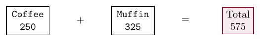
The first version
These are complete classes. The demo prints a receipt and then a short summary. A false flag means that the product was not ordered.
public class Order
{
public boolean hasCoffee;
public boolean hasTea;
public boolean hasMuffin;
public String customerName;
public String customerPhone;
public Order(String customerName,
String customerPhone)
{
this.customerName = customerName;
this.customerPhone = customerPhone;
hasCoffee = false;
hasTea = false;
hasMuffin = false;
}
}public class Kiosk
{
private static final int COFFEE_PRICE = 250;
private static final int TEA_PRICE = 200;
private static final int MUFFIN_PRICE = 325;
private Order order;
public Kiosk(Order order)
{
this.order = order;
}
public int getTotal()
{
int total = 0;
if(order.hasCoffee) {
total = total + COFFEE_PRICE;
}
if(order.hasTea) {
total = total + TEA_PRICE;
}
if(order.hasMuffin) {
total = total + MUFFIN_PRICE;
}
return total;
}
public void printReceipt()
{
System.out.println(
"Order for " + order.customerName);
System.out.println(
"Phone " + order.customerPhone);
if(order.hasCoffee) {
System.out.println("Coffee 250");
}
if(order.hasTea) {
System.out.println("Tea 200");
}
if(order.hasMuffin) {
System.out.println("Muffin 325");
}
System.out.println("Total " + getTotal());
}
public void printSummary()
{
System.out.println(
"Order for " + order.customerName);
System.out.println(
"Phone " + order.customerPhone);
System.out.println("Total " + getTotal());
}
}public class OrderDemo
{
public static void main(String[] args)
{
Order order = new Order("Ada Lim", "555-0101");
order.hasCoffee = true;
order.hasMuffin = true;
Kiosk kiosk = new Kiosk(order);
kiosk.printReceipt();
kiosk.printSummary();
}
}Expected output
Order for Ada Lim Phone 555-0101 Coffee 250 Muffin 325 Total 575 Order for Ada Lim Phone 555-0101 Total 575
Counting changes
Adding cookie support needs seven added source lines in two classes: the new flag and its initial value in Order; a price constant, two total lines and two receipt lines in Kiosk. We count added lines, leaving out brace-only lines and the demo line that orders the cookie. The same rule applies when we compare the better design later.
A useful design keeps a change close to the data or rule that changed. Some features still touch several classes. The aim is that each class changes for its own reason. As more products are added, a list of items will express the choices more directly than a growing set of flags.
Practice
1.1 Suppose coffee rises from 250 to 275 cents in this first design. Which source lines must change so the receipt and total agree? Count the changed lines and classes.
| Changed lines | Classes |
|---|---|
1.2 Two versions both print the correct standing total. What concrete change would you try to compare how easy their designs are to change?
2. Silent bugs
A missed branch
Suppose the cookie field and receipt branch are added, but the total branch is missed. The program compiles without warnings. Its receipt is legal text, and its arithmetic is legal Java, but the two parts describe different orders.
Order for Ada Lim Phone 555-0101 Coffee 250 Muffin 325 Cookie 175 Total 575
The listed food costs 750 cents, but the program charges 575. The missing 175 is a business-rule error. Java checks names and types here; it does not add the receipt lines and compare them with the total.
Implicit coupling is a dependency between pieces of code that the compiler cannot check. The receipt and total must agree about the menu and prices. If that knowledge is stored in several places, a change to one place can leave the others behind.
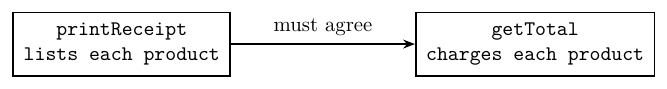
Use this complete delivery class for the questions below. Its two methods contain separate charge values.
public class Parcel
{
public int getCharge()
{
return 300;
}
public String getLabel()
{
return "Delivery 250";
}
}Practice
2.1 This separate delivery example compiles. What two lines does the code print? Explain which prices disagree.
Parcel parcel = new Parcel();
System.out.println(parcel.getCharge());
System.out.println(parcel.getLabel());| Line | Printed |
|---|---|
| 1 | |
| 2 |
2.2 How could the delivery class keep the charge in one place while still returning both a number and a label? Describe the stored value and how the methods use it.
3. Duplication
Shared code and rules
Duplication is the same code or knowledge written in more than one place. The cafe reports repeat the customer header. The literal receipt prices repeat the knowledge used by the total. Both copies need the same edit when that shared information changes. A missed copy can silently give a wrong result.
Method decomposition splits a larger task into smaller methods with clear jobs. Extract the two header lines into a private method inside Kiosk. Both reports call it in the same position where their old copies appeared:
private void printHeader()
{
System.out.println("Order for " + order.customerName);
System.out.println("Phone " + order.customerPhone);
}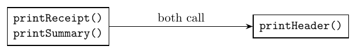
Method cohesion
Cohesion is how closely the parts of a method or class belong to one task or one idea. printHeader has one job. A receipt method can call smaller methods and still have one logical task: produce a receipt. Changing a customer's phone number is a separate task and belongs in a different method.
Names help readers see these boundaries. printHeader describes an output operation. getTotal describes a returned value. A name such as doThings gives the reader no information about the job. Short methods with clear names are easier to read and can be called wherever their task is needed.
Practice
3.1 Two report methods end with the same lines below. Extract a private method called printFooter. Show the method and the replacement call used in each report.
System.out.println("Thank you");
System.out.println("Please visit again");The box starts with two small reports. Extract the footer and replace both copies with calls.
3.2 A method named getTotal prints a receipt and returns its total. Suggest a clearer division of work and suitable method names.
3.3 A receipt method calls printHeader(), printItems() and printTotal(). Does using three helpers make its jobs unrelated? Explain using the purpose of the report.
4. Loans Part 1: The desk
The problem
Do this part at home. A library's starter program stores title, dueDay and returned as public fields in Book. Book(String title, int dueDay) creates an unreturned book. LoanDesk holds an ArrayList<Book>; its constructor starts an empty list and addBook(book) appends a book. Both printOverdue(today) and printTotal(today) contain the 25-cent daily fine rule.
Use non-null titles and books, add each book once, and use small day numbers on the same calendar. All days and fine totals fit in an int. A returned book has no current fine in this model; the program does not keep paid-fine history.
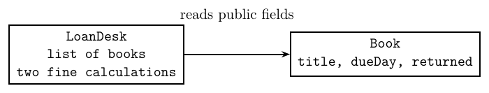
The starter classes
public class Book
{
public String title;
public int dueDay;
public boolean returned;
public Book(String title, int dueDay)
{
this.title = title;
this.dueDay = dueDay;
returned = false;
}
}import java.util.ArrayList;
public class LoanDesk
{
private ArrayList<Book> books;
public LoanDesk()
{
books = new ArrayList<>();
}
public void addBook(Book book)
{
books.add(book);
}
public void printOverdue(int today)
{
for(Book book : books) {
if(!book.returned && today > book.dueDay) {
int days = today - book.dueDay;
int fine = days * 25;
System.out.println(
book.title + ": " + days
+ " days late, fine " + fine);
}
}
}
public void printTotal(int today)
{
int total = 0;
for(Book book : books) {
if(!book.returned && today > book.dueDay) {
total = total + (today - book.dueDay) * 25;
}
}
System.out.println("Total fines: " + total);
}
}public class LoanDemo
{
public static void main(String[] args)
{
LoanDesk desk = new LoanDesk();
desk.addBook(new Book("Dune", 10));
desk.addBook(new Book("Emma", 14));
desk.addBook(new Book("Holes", 3));
desk.printOverdue(12);
desk.printTotal(12);
}
}The new interface
Make the book's three fields private. Add the methods in red, and keep the constructors and the desk's existing public methods. The minus sign denotes a private member; the plus sign denotes a public member.
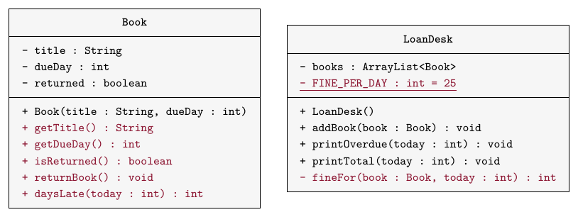
- Each getter returns its field's value.
returnBook()sets the returned flag to true. daysLate(today)returns 0 if the book is returned or today is on or before its due day. A book due today is not late. Otherwise return today minus the due day.fineFor(book, today)uses the book's days late and the one daily-rate constant. Both printing methods use this private helper. Usebook.daysLate(today)to decide which books are overdue.
The demo adds Dune due on day 10, Emma on day 14 and Holes on day 3, in that order. Today is day 12. Call printOverdue(12), then printTotal(12). Only Dune and Holes have report lines.
Practice
4.1 Write the revised Book, LoanDesk and LoanDemo. Use additional paper or an IDE for the complete implementation.
Expected output
Dune: 2 days late, fine 50 Holes: 9 days late, fine 225 Total fines: 275
Write each class in its own box. Finished copies of the other classes are available. The checks try a book before its due day, on its due day, after it is due and after it is returned. The desk check also tries an empty desk and repeated calls.
4.2 Predict the three numbers printed by this Part 1 code. Explain the last result.
Book book = new Book("Dune", 10);
System.out.println(book.daysLate(10));
System.out.println(book.daysLate(12));
book.returnBook();
System.out.println(book.daysLate(12));| Line | Printed |
|---|---|
| 1 | |
| 2 | |
| 3 |
5. Encapsulation
Representation and access
Encapsulation hides a class's representation behind the methods it offers. Public fields let callers read and change storage details directly. In the cafe, Kiosk depends on a boolean with the exact name hasCoffee. If that field becomes private, the separate kiosk class can no longer read it directly. The compiler points out these accesses. A public query provides a controlled answer:
public boolean hasCoffee()
{
return hasCoffee;
}The caller changes order.hasCoffee to order.hasCoffee(). This method is a promise to answer a question. Its implementation may change if the representation changes, provided it keeps the same meaning. Operations such as addCoffee() also let callers request changes without writing fields directly.
Coupling
Coupling is how much one class depends on the details of another. With tight coupling, a change to one class's details often requires edits in its callers. With loose coupling, callers depend on a small, stable interface. Loose coupling still has dependencies. A getter hides a field but still connects its caller to a method. Private fields help reduce coupling, but the kiosk still knows all the products and prices until we move that work.
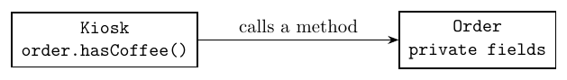
A dependency arrow points from the class that uses something to the class it uses. Fewer and narrower connections usually leave fewer details that a caller must know.
Practice
5.1 Order.customerPhone has become private, and getCustomerPhone() returns its value. Rewrite this old caller.
System.out.println(order.customerPhone);A finished private-field Order is available. Complete the caller.
5.2 A programmer makes every field private but leaves every product price copied in the receipt and total. Which design problem remains, and why?
5.3 An order changes how it stores its choices but keeps hasCoffee() with the same meaning. Must a caller that only uses this query change? Explain the condition that matters.
6. Responsibility
Work near its data
Responsibility-driven design assigns a job to the class that holds the information the job needs. The kiosk needs a total to print, but the order holds the choices. Move the calculation into Order; Kiosk asks for the result. Needing an answer does not mean the caller should calculate it.
Inside Order, getTotal() can read the order's own private fields. This intermediate version still has price literals in its receipt and total. Moving behaviour to its owner is useful even before that separate duplication problem is removed.
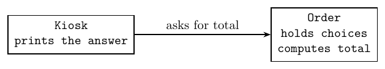
Returned text
Order.getReceipt() builds and returns a String. getSummary() returns the short version. The kiosk's printing method becomes:
public void printReceipt()
{
System.out.println(order.getReceipt());
}The order builds the header, item lines and total. The kiosk chooses an output destination. Another caller could save or compare the returned text without copying its formatting rules. Printed output can also be captured by a test; returning a value simply makes direct comparison easier.
A returned String describes the order at the time of the call. A later change to the order does not update a String already stored in a local variable. Call getReceipt() again to obtain a receipt for the changed order.
Practice
6.1 Add boolean hasAnyItem() to the flag-based design. Choose Order or Kiosk, and write the method using hasCoffee, hasTea and hasMuffin.
Add the method to Order. The check tries an empty order and each choice separately, then calls the method again.
6.2 A new ReceiptSaver needs exactly the same receipt text as the kiosk. How should it obtain that text without copying the formatting rules?
6.3 Use the intermediate order with returned receipt text. What does this print?
Order order = new Order("Ada Lim", "555-0101");
String receipt = order.getReceipt();
order.addCoffee();
System.out.println(receipt);
System.out.println(order.getTotal());| Line | Printed |
|---|---|
| 1 | |
| 2 | |
| 3 | |
| 4 |
7. Cohesion
Related data and operations
The old order stores contact details and item choices. A customer could place several orders, so the name and phone describe a separate entity. Extract Customer and let each order hold a customer reference. A MenuItem stores a product's name and price. Both classes have private fields and getters. The shared menu items have no setters, so callers cannot change their prices through the methods they offer.
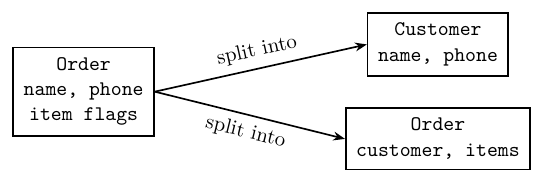
public class Customer
{
private String name;
private String phone;
public Customer(String name, String phone)
{
this.name = name;
this.phone = phone;
}
public String getName()
{
return name;
}
public String getPhone()
{
return phone;
}
}public class MenuItem
{
private String name;
private int priceInCents;
public MenuItem(String name, int priceInCents)
{
this.name = name;
this.priceInCents = priceInCents;
}
public String getName()
{
return name;
}
public int getPriceInCents()
{
return priceInCents;
}
}Class cohesion improves when a class represents one useful idea with related operations. More classes do not automatically improve a design. A single field alone is not enough reason for a new class; an extra class should clarify an idea or a responsibility. Customer can be used for several orders, and MenuItem can be used by another kind of order.
A list of choices
A flag records only yes or no. It cannot record two coffees. An ArrayList<MenuItem> expresses a variable number of choices, including repeated references to the same menu item. The order's total adds the price of every entry, so a repeated reference is counted again.
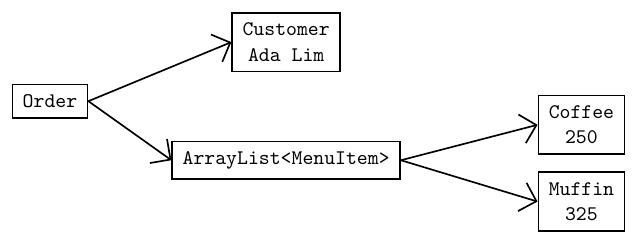
Order(Customer customer, ArrayList<MenuItem> items) copies the input list's references into a new list. Later edits to the input list therefore leave the order's list unchanged. The item objects are shared, but offer no mutation methods. Use non-null customers and items and non-negative prices. The example totals fit in an int.
The order's loops now work for any menu item. getTotal() adds the returned prices. getReceipt() builds its header, visits each item, then appends the total. Kiosk only prints the returned text.
The menu
Menu provides static final MenuItem references named COFFEE, TEA and MUFFIN. Each declaration creates an item with its name and price. There is no product-specific branch in either order loop. The list expresses the data directly, using constructs we already know.
The complete order
These classes use the customer and item classes above. The constructor makes a new list and copies each supplied item reference into it. The public addItem method changes the order's own list. The shared header method keeps the receipt and summary consistent, while the kiosk prints either result. The menu here still has its original three products. Run this version before adding the cookie.
import java.util.ArrayList;
public class Order
{
private Customer customer;
private ArrayList<MenuItem> items;
public Order(Customer customer,
ArrayList<MenuItem> items)
{
this.customer = customer;
this.items = new ArrayList<>();
for(MenuItem item : items) {
this.items.add(item);
}
}
public void addItem(MenuItem item)
{
items.add(item);
}
public int getTotal()
{
int total = 0;
for(MenuItem item : items) {
total = total + item.getPriceInCents();
}
return total;
}
private String getHeader()
{
return "Order for " + customer.getName() + "\n"
+ "Phone " + customer.getPhone() + "\n";
}
public String getReceipt()
{
String receipt = getHeader();
for(MenuItem item : items) {
receipt = receipt + item.getName() + " "
+ item.getPriceInCents() + "\n";
}
return receipt + "Total " + getTotal();
}
public String getSummary()
{
return getHeader() + "Total " + getTotal();
}
}public class Kiosk
{
private Order order;
public Kiosk(Order order)
{
this.order = order;
}
public void printReceipt()
{
System.out.println(order.getReceipt());
}
public void printSummary()
{
System.out.println(order.getSummary());
}
}public class Menu
{
public static final MenuItem COFFEE =
new MenuItem("Coffee", 250);
public static final MenuItem TEA =
new MenuItem("Tea", 200);
public static final MenuItem MUFFIN =
new MenuItem("Muffin", 325);
}import java.util.ArrayList;
public class OrderDemo
{
public static void main(String[] args)
{
Customer customer = new Customer(
"Ada Lim", "555-0101");
ArrayList<MenuItem> items = new ArrayList<>();
items.add(Menu.COFFEE);
items.add(Menu.MUFFIN);
Order order = new Order(customer, items);
Kiosk kiosk = new Kiosk(order);
kiosk.printReceipt();
kiosk.printSummary();
}
}Practice
7.1 A lesson class stores teacherName, teacherEmail, room and startTime. Suggest two cohesive classes and assign those fields to them.
7.2 What two numbers does this print? The order constructor copies the supplied list.
Customer customer = new Customer("Ada Lim", "555-0101");
ArrayList<MenuItem> items = new ArrayList<>();
items.add(Menu.COFFEE);
items.add(Menu.COFFEE);
Order order = new Order(customer, items);
System.out.println(order.getTotal());
items.add(Menu.TEA);
System.out.println(order.getTotal());| Line | Printed |
|---|---|
| 1 | |
| 2 |
7.3 Sketch the references for an order containing two coffees. Use two list entries and one MenuItem object. Explain why the total counts two items.
Draw the sketch on paper. In the box, describe where each arrow ends and explain the total.
8. Refactoring
Structure and behaviour
Refactoring changes the structure of code without changing its observable behaviour. Extracting the header, moving methods and splitting classes can all be refactorings when their observable results stay the same. Check the original receipt and summary after each structural change, before adding a feature. Then extend the program and check its new behaviour separately. If both changes are made together, a failure has more possible causes.
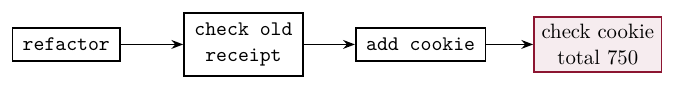
The cookie change
The better design needs one added declaration in Menu:
public static final MenuItem COOKIE = new MenuItem("Cookie", 175);The demo still has to order the cookie with Menu.COOKIE. The order's loops already include its price and text. Order, Customer, MenuItem and Kiosk keep the same code as before this addition. Using the same counting rule as before, product support costs one added source line in one class, compared with seven added non-brace lines in two classes.
A method is too long when it does more than one logical task. A class is too complex when it represents more than one entity. These guidelines concern responsibilities rather than a fixed number of lines. Choose a construct that expresses the data, and give callers a small interface with useful operations.
Practice
8.1 A proposed edit extracts the receipt header and changes the coffee price at the same time. How would you split this work so a wrong result is easier to investigate?
8.2 A private field is renamed everywhere it is used. No output or public operation changes. Is this refactoring? Would removing the phone line from a receipt be the same kind of change?
8.3 Predict the two totals for this different order using the same menu prices.
Customer customer = new Customer("Ada Lim", "555-0101");
ArrayList<MenuItem> items = new ArrayList<>();
items.add(Menu.TEA);
items.add(Menu.MUFFIN);
Order order = new Order(customer, items);
System.out.println(order.getTotal());
order.addItem(Menu.COOKIE);
System.out.println(order.getTotal());| Line | Printed |
|---|---|
| 1 | |
| 2 |
9. Loans Part 2: The change
The problem
Extend Part 1 at home. Keep its interface and add the two methods in red. Book owns lateness and the title; LoanDesk owns the fine rate. Keep the remaining fields and methods from Part 1 too.
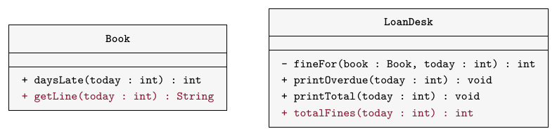
getLine(today)returns the title, a colon and space, the days late anddays late, for exampleDune: 2 days late. It prints nothing and contains no fine rate.totalFines(today)returns the sum offineFor(book, today)for all stored books. An empty desk returns 0.printTotalprints that result.printOverdueuses the book's returned line and adds, finefollowed by the fine fromfineFor. Only books with positive days late have report lines.
Run the demo at 25 cents per day. Change the one rate constant to 30, then compile and run again. Both runs use the same demo. The book's lateness and text methods stay unchanged.
Practice
9.1 Write the complete Part 2 classes and run both versions of the demo. Use additional paper or an IDE for the complete implementation.
Expected output at 25 cents
Dune: 2 days late, fine 50 Holes: 9 days late, fine 225 Total fines: 275
Expected output at 30 cents
Dune: 2 days late, fine 60 Holes: 9 days late, fine 270 Total fines: 330
The first three boxes use the 25-cent rate. Finished copies of the other classes are available. The checks include a due-today book, a returned book, an empty desk and repeated calls. Change only the rate in the last box to check the 30-cent version.
9.2 For Emma, due on day 14, what does getLine(12) return? Why is that text absent from printOverdue(12)?
| Line | Printed |
|---|---|
| 1 |
10. Review
Design choices
The cafe and loan desk show the same questions in different settings. Look for rules written twice, callers that depend on storage details, and work separated from the information it needs. A method can be short but mix jobs. A class can have private fields yet expose too many details through its methods.
A check of one successful example covers only that example. Keep the original behaviour in view while refactoring, including empty collections and boundary cases. Then check the changed feature separately. Refactoring is safe only if we can tell whether we broke something. Lecture 15 starts testing and debugging, where checks become repeatable. Inheritance will later provide another way to remove duplication across classes.
Practice
10.1 A class has private fields and thirty getters that reveal every stored value. A caller uses nearly all of them to calculate a report. Does private access alone show that the design is loosely coupled? Explain a useful improvement.
10.2 A cafe refactor passes the standing-order check. Give two other orders supported by the original design that you would check before adding the cookie.
10.3 A sensor always records exactly seven daily values. Must it use an ArrayList to have a good design? Choose a suitable representation and justify it.
11. Complete Java Programs
Read and run these two complete programs after class, then write the extension asked for at the end of each. Use additional paper or an IDE for the complete implementation. Compare your demo's output with the expected output before changing a class. Both programs use non-null objects and small non-negative amounts that fit in an int.
In each box, complete one class. Finished copies of the other classes are available.
11.1 Program A: Song and Playlist
Each song stores its own title and length. The playlist keeps songs together and asks them for this information when it builds its report and total.
Song(String title, int lengthInSeconds)stores a non-null title and a non-negative length in private fields.getLengthInSeconds()returns the length;getLine()returns its title, length ands.Playlist(String name)stores its name and creates an empty privateArrayList<Song>in thesongsfield.addSong(song)appends a non-null song. Repeated songs are allowed.getTotalSeconds()adds each song's returned length. An empty playlist totals 0.getReport()returns the playlist heading, one song per line and a total line. It prints nothing.- The demo creates Morning and adds Harbour (180 seconds), Rain (210) and Home (150), in that order. It prints the returned report.
/** One song, with its length in whole seconds. */
public class Song
{
private String title;
private int lengthInSeconds;
/** Use a non-null title and a non-negative length. */
public Song(String title, int lengthInSeconds)
{
this.title = title;
this.lengthInSeconds = lengthInSeconds;
}
public int getLengthInSeconds()
{
return lengthInSeconds;
}
/** Return text so the caller can choose where it goes. */
public String getLine()
{
return title + " " + lengthInSeconds + " s";
}
}import java.util.ArrayList;
/** A named collection of songs. */
public class Playlist
{
private String name;
private ArrayList<Song> songs;
public Playlist(String name)
{
this.name = name;
songs = new ArrayList<>();
}
/** Add a non-null song. Repeated songs are allowed. */
public void addSong(Song song)
{
songs.add(song);
}
/** Ask each song for its length. */
public int getTotalSeconds()
{
int total = 0;
for(Song song : songs) {
total = total + song.getLengthInSeconds();
}
return total;
}
public String getReport()
{
String report = "Playlist " + name + "\n";
for(Song song : songs) {
report = report + song.getLine() + "\n";
}
return report + "Total " + getTotalSeconds() + " s";
}
}/** Run the playlist report. */
public class PlaylistDemo
{
public static void main(String[] args)
{
Playlist list = new Playlist("Morning");
list.addSong(new Song("Harbour", 180));
list.addSong(new Song("Rain", 210));
list.addSong(new Song("Home", 150));
System.out.println(list.getReport());
}
}Expected output
Playlist Morning Harbour 180 s Rain 210 s Home 150 s Total 540 s
SongThe checking program reads the stored values from separate objects.
PlaylistThe checking program tries an empty playlist, a song with length 0, a repeated song and a second report.
PlaylistDemoFinished copies of the other two classes are available. Match the expected demo output above.
11.1 Add int countLongerThan(int seconds) to Playlist. Count songs whose length is strictly greater than the argument. For the demo, call it with 180 and print the returned count. Use additional paper or an IDE for the complete implementation.
The extension check tries an empty list, a length equal to the limit, no matches, repeated songs and a second call.
11.2 Program B: Ticket and TicketOffice
A ticket records a customer name and a price code. The office keeps one table of prices for both its total and its report. Amounts are whole cents.
Ticket(String name, int priceCode)stores both values in private fields.getName()andgetPriceCode()return them. Code 0 is adult and code 1 is student. Only those codes are valid here.TicketOffice()creates an empty privateArrayList<Ticket> tickets.addTicket(ticket)appends a non-null ticket with a valid code.- The private
static final int[] PRICESholds 1200 at index 0 and 800 at index 1. PrivatepriceFor(ticket)reads the one table. Both report and total use this helper. getTotal()returns the sum of all ticket prices, or 0 for no tickets.getReport()returns the heading, one line per ticket and the total. The demo prints a report for Ada (code 0), Bo (code 1) and Chen (code 0).
The ticket does not keep a second copy of its price. A price-code index must be valid before priceFor uses it. Use only codes 0 and 1 with this table.
/** A ticket records a name and an index in the price table. */
public class Ticket
{
private String name;
private int priceCode;
/** Use a non-null name; code 0 is adult, code 1 is student. */
public Ticket(String name, int priceCode)
{
this.name = name;
this.priceCode = priceCode;
}
public String getName()
{
return name;
}
public int getPriceCode()
{
return priceCode;
}
}import java.util.ArrayList;
/** One table supplies the prices for both report and total. */
public class TicketOffice
{
private static final int[] PRICES = {1200, 800};
private ArrayList<Ticket> tickets;
public TicketOffice()
{
tickets = new ArrayList<>();
}
/** Add a non-null ticket with a valid price code. */
public void addTicket(Ticket ticket)
{
tickets.add(ticket);
}
private int priceFor(Ticket ticket)
{
return PRICES[ticket.getPriceCode()];
}
public int getTotal()
{
int total = 0;
for(Ticket ticket : tickets) {
total = total + priceFor(ticket);
}
return total;
}
public String getReport()
{
String report = "Tickets\n";
for(Ticket ticket : tickets) {
report = report + ticket.getName() + " "
+ priceFor(ticket) + "\n";
}
return report + "Total " + getTotal();
}
}/** Run the ticket report. All amounts are in cents. */
public class TicketOfficeDemo
{
public static void main(String[] args)
{
TicketOffice office = new TicketOffice();
office.addTicket(new Ticket("Ada", 0));
office.addTicket(new Ticket("Bo", 1));
office.addTicket(new Ticket("Chen", 0));
System.out.println(office.getReport());
}
}Expected output
Tickets Ada 1200 Bo 800 Chen 1200 Total 3200
TicketThe checking program reads the stored values from separate objects.
TicketOfficeThe checking program tries an empty office, both valid price codes, two adult tickets and a second report.
TicketOfficeDemoFinished copies of the other two classes are available. Match the expected demo output above.
11.2 The adult price rises to 1500 cents. Make one source edit, compile and run the same demo again. Explain why both the ticket lines and the total change. Use additional paper or an IDE for the complete implementation.
The extension check uses the same tickets with the new adult price. It also checks an empty office and repeated reports.
Lecture summary
The cafe starts with code that gives the right answer but repeats its product rules. Adding a cookie shows how those copies can get out of step. The revised design puts work with the data it needs and keeps each price in one place.
Change
- A correct result for one order tells us little about the cost of the next change. Try a concrete change, then count the lines and classes that need edits.
- Adding cookie support to the first design needs seven added lines in two classes. We leave out brace-only lines and the demo line that orders the cookie.
- The standing order is coffee at 250 cents and a muffin at 325, for a total of 575. Adding a cookie at 175 gives 750. The receipt and total must both include the cookie.
Silent bugs
- Implicit coupling is a dependency between pieces of code that the compiler cannot check. The receipt and total must agree about the menu and its prices.
- The missed-cookie version compiles and prints a cookie line, but still charges 575. Java accepts both the text and the arithmetic. It does not check whether the business rules agree.
- Duplication is the same code or knowledge written in more than one place. Separate price literals duplicate knowledge even when their surrounding code looks different.
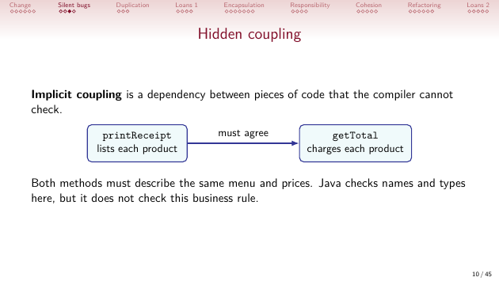
Methods and cohesion
- Method decomposition splits a larger task into smaller methods with clear jobs. Extract the shared header into
printHeader(), then call it from both reports. - Cohesion is how closely the parts of a method or class belong to one task or one idea. A receipt method can use several helpers and still have one logical task.
- Names should describe the whole job. A method called
getTotal()returns a number. A separate printing method can ask for that number when it produces output.
Encapsulation and coupling
- Encapsulation hides a class's representation behind the methods it offers. Making a field private stops a separate class from reading it directly. The caller can use a public query such as
hasCoffee(). - Coupling is how much one class depends on the details of another. A small, stable interface leaves fewer details for callers to know. A query can keep its meaning while its class changes how it stores the answer.
- Private fields alone do not remove duplicated prices or make every interface small. A caller that needs many getters to build a report may still depend on many details.
Responsibility
- Responsibility-driven design assigns a job to the class that holds the information the job needs. The order holds the choices, so it calculates the total. The kiosk asks for that total.
Order.getReceipt()returns text; the kiosk prints it. Another caller can save or compare the same text without copying its formatting rules. Printed output can also be captured by a test.- A returned String describes the order when the method was called. Adding an item later does not update a String already stored in a variable. Call the method again to get current text.
Classes and collections
- A customer name and phone describe a customer. Extracting
Customerlets several orders refer to the same customer. EachMenuItemholds its product name and price. - An
ArrayList<MenuItem>represents a variable number of choices. Two entries may refer to one coffee object. A total loop visits both entries and adds the price twice. - The order constructor copies the input list's references into a new list. Adding tea to the original list later leaves the order's list unchanged. The shared menu items offer no mutation methods.
- Choose a representation that fits the data. An array is still suitable when the number of values is fixed, such as seven daily sensor readings.
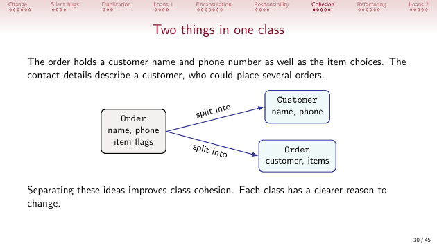
Refactoring
- Refactoring changes the structure of code without changing its observable behaviour. Extracting a method, moving work and splitting a class can be refactorings when the results stay the same.
- Check the original receipt and summary after each structural change. Include an empty order and an order with only tea. Then add the cookie and check the new behaviour separately.
- The revised design adds cookie support with one declaration in
Menu. The existing order loops already use each item's name and price. The demo still has to request the cookie.
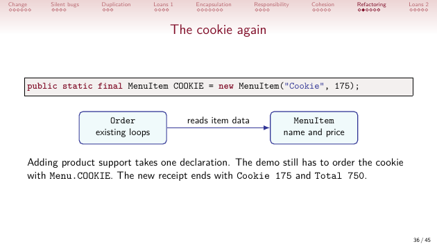
Library loans
Bookowns lateness.daysLate(today)returns 0 for a returned book or a book that is not yet late. A book due today is not late.LoanDeskowns the fine policy. OneFINE_PER_DAYconstant and the privatefineForhelper supply the fine calculation to both reports.- Part 2 adds
Book.getLine(today)andLoanDesk.totalFines(today). Building a line and deciding whether to include it in an overdue report are separate jobs. The desk prints only books with positive days late. - For Dune, Emma and Holes on day 12, the total is 275 cents at 25 cents per day. One constant edit to 30 cents per day changes the total to 330. The book's lateness and text methods stay the same.